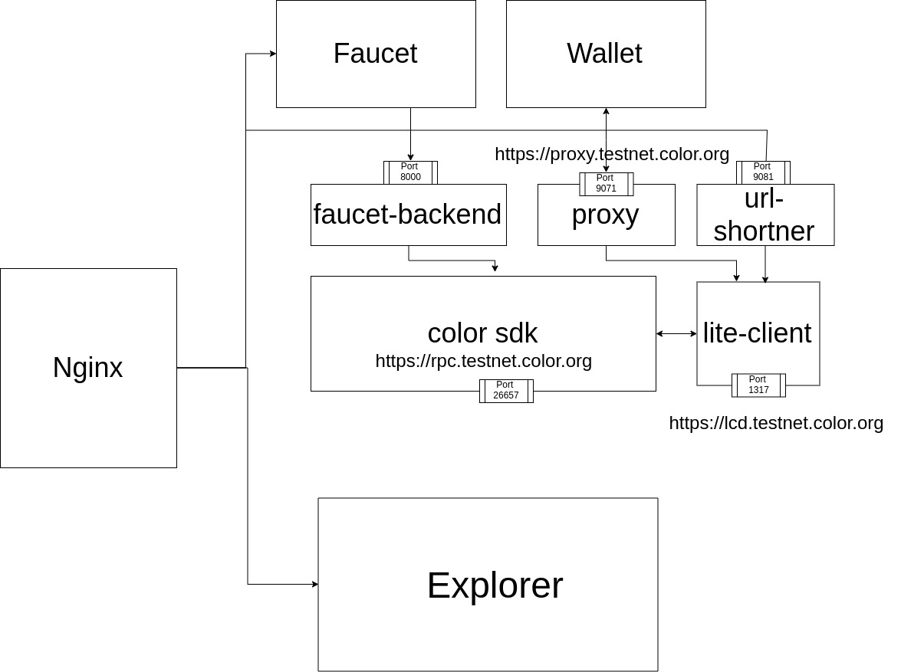

Configration Guidelines Docker Base

1. Setup Color Nodes
To setup color nodes, clone the code from color platform
https://github.com/ColorPlatform/color-sdk
run the following commnad to start nodes
make install
make build
make build-docker-colordnode
docker-compose up
2. Setup lite client
Run the following command to start lite client
colorcli rest-server --chain-id=colors-test-01 --laddr=tcp://0.0.0.0:1317 --node tcp://localhost:26657 --trust-node=false --home node1/colorcli
you can set path to any node
e.g --home node1/colorcli
3. Setup Explorer
Prerequisite
- Install nodejs v11.15.0
- Install Meteor
- Install Yarn
Setup the mongo db using the collowing commands
sudo apt update
sudo apt install -y mongodb
sudo systemctl status mongodb
Create User on mongo db Type following in side mongodb
db.createUser(
{
user: "username",
pwd: "password",
roles: [ { role: "readWrite", db: "colorplatform" } ]
}
);
Mannual Method
Clone the project from color platform
git clone https://github.com/RNSSolution/explorer.git
cd ~/explorer/explorer-tesetnet-v1.0/programs/server
npm install
cd ~/explorer/explorer-tesetnet-v1.0
run the following command to start explorer
PORT=3000 ROOT_URL=http://localhost/ MONGO_URL='mongodb://{username}:{password}@{IP}:27017/colorplatform' METEOR_SETTINGS="$(cat settings.json)" meteor node main.js
Setup explorer using Docker
To Get genesis file run the follwing command
https://raw.githubusercontent.com/ColorPlatform/explorer/colorsplatform/development/settings.json
To run the docker
docker run -d -p 3000:3000 -e MONGO_URL=mongodb://{username}:{password}@{IP}:27017/colorplatform -e METEOR_SETTINGS="$(cat settings.json)" --name explorer rnssolutions/explorer:0.1.5
4. Setup Wallet
Lite Proxy
clone the lite-proxy
git clone https://github.com/ColorPlatform/lite-proxy.git
cd lite-proxy
install the certificated
yarn install
yarn certificates
To run the proxy
yarn proxy
By default it will run on https://lcd.testnet.color-platform.rnssol.com
to change this update value of target in proxy.js
Wallet URL shortner
To Setup url shortner clone the code
git clone https://github.com/ColorPlatform/url-shortner.git
cd url-shortner
docker-compose up
Wallet Docker Container
Type the following command in terminal to run front end of wallet
docker run -p 9080:9080 -d rnssolutions/colorwallet:1.0.4
5. Setup Faucet
Faucet consist of backed and front end
Setup faucet backend
clone the code from color platform
git clone https://github.com/ColorPlatform/faucet-backend.git
cd faucet-backend
set the configration in .env.local set FAUCET_KEY with with address of validator
to run the faucet
./faucet
Setup facuet front end
run the following command to run faucet front end
docker run -p 8080:8080 -d rnssolutions/color-faucet-frontend:0.0.9-rc